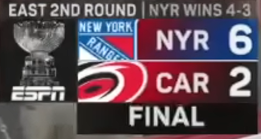
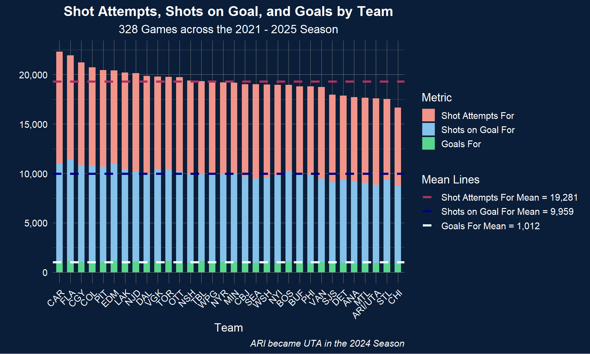
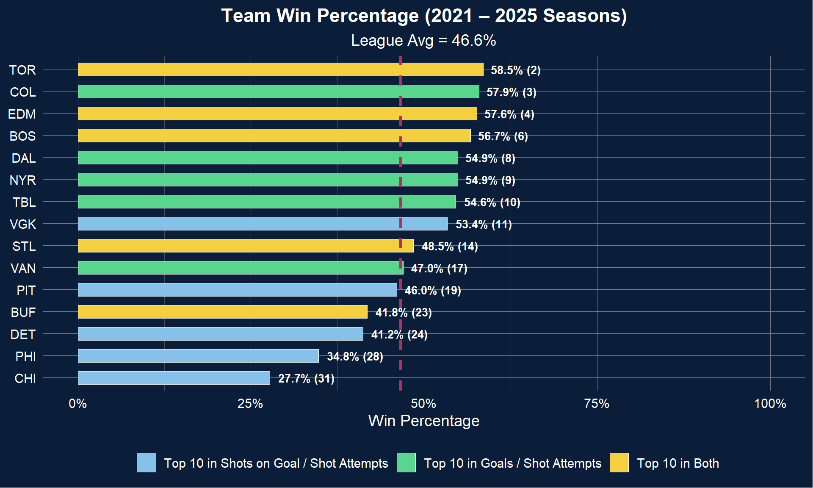
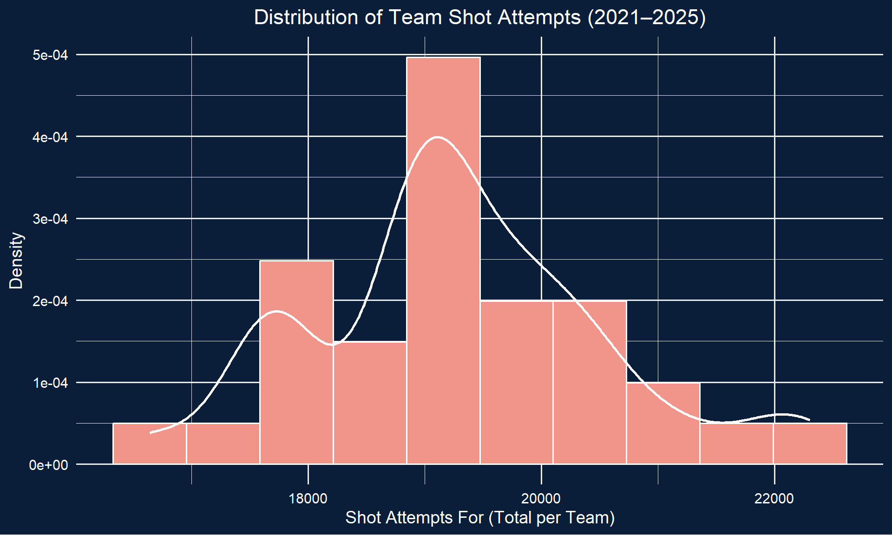
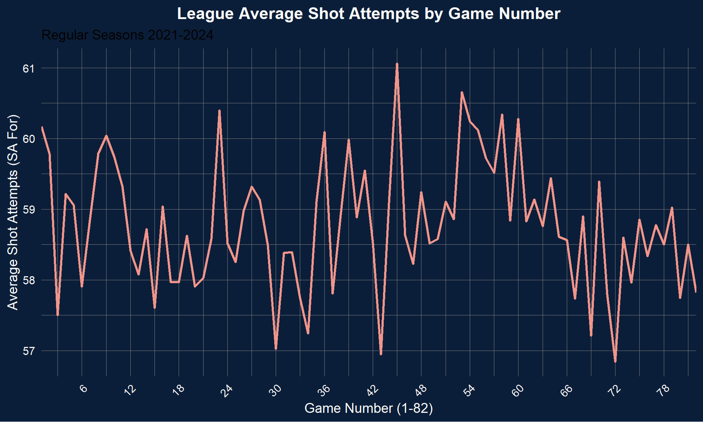
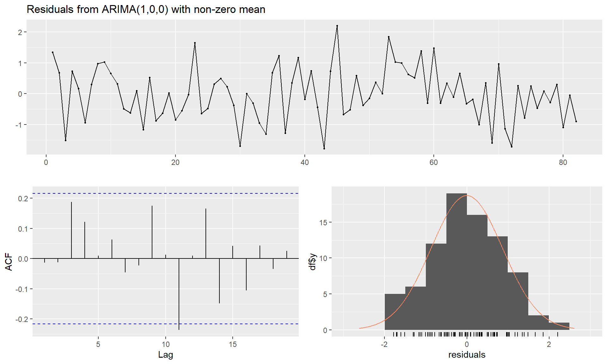
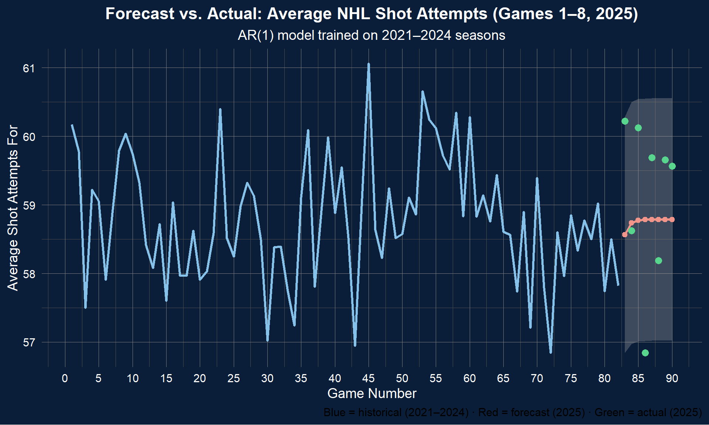
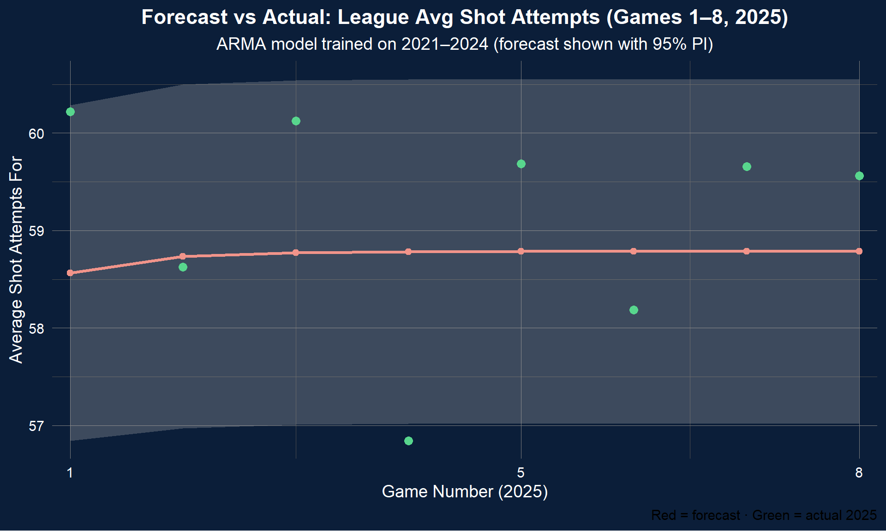

A popular sport in both North America and Europe, ice hockey is considered one of the fastest and most difficult team games to play.
In North America, the largest ice hockey league is the National Hockey League or NHL. It is a league comprised of 32 teams, 25 in the U.S. and 7 in Canada, all of whom compete each year to lift what some consider the greatest trophy in sports, the Stanley Cup.
Panthers captain Aleksander Barkov lifts Cup in 2024, via AP News
The basic rules of hockey are as follows:
Each team can have a maximum of 5 players plus a goaltender on the ice at any given time
This can change based on whether a team has taken a penalty (infraction), or has pulled their goaltender for an extra attacked
You win by scoring more goals than the other team
A goal is when the puck, the small black object made of vulcanized rubber, crosses the goal line and into the net
There is an exception to this rule in the regular season, you can win in a shootout, which doesn’t count as a goal
Hurricanes forward Jordan Martinook keeping the puck out of the net in the 2024 playoffs, via SportsNet on YouTube
Goals and Shot Attempts
So, how does a team score a goal?
The most standard way is to take a shot from somewhere, most often in the offensive/attacking zone. When a player takes a shot, it registers as a shot attempt (SA). When a shot attempt is placed on net, it counts as a shot on goal (SoG), and when it goes into the goal, it’s counted as a goal or goal for (GF).
The first gif below shows a shot attempt that is also a shot on goal and a goal for.
A shot attempt, a shot on goal and a goal for. Credit anonymous on Giphy
The second gif shows a shot attempt that was blocked by a defender and is therefore only a shot attempt, not a shot on goal.
A shot attempt, but not a shot on goal. Credit @hockeyplayersclub on Giphy
Project Motivation
Any fan of the NHL might have heard the term shot attempt, especially from the last few years, as broadcasting networks such as ESPN have talked about them ad nauseum as a be-all-end-all offensive statistic.
As a New York Rangers fan, I especially began to notice the term being used in reference to the Carolina Hurricanes, a team whom the Rangers have played twice in the playoffs in the past 3 years (2022 and 2024). The Hurricanes would frequently have double or triple the number of shot attempts as the Rangers, however…

Sorry not sorry, Hurricanes fans (via SportsNet on YouTube)
However, neither the Rangers nor the Hurricanes were the primary motivation for this analysis. It’s actually the Florida Panthers, the current reigning back-to-back Stanley Cup champions.
The Florida Panthers have made the Stanley Cup Final for the past 3 years, losing the first year to Vegas, then winning the past two against Edmonton both times. After making the Final for the third consecutive season by beating the Carolina Hurricanes in the Eastern Conference Final in 5 games, Hurricanes coach Rod Brind’Amour said “[The Florida Panthers] are the standard”.
The Panthers are a team that prides itself on a two-way game, being effective in all-three zones. In the offensive zone, that includes getting shots to the net. The NHL is a copycat league, as are most in the sports world. This leads me to analyzing Shot Attempts as a metric and trying to forecast shot attempts throughout the year in a standard, 82 game regular season.
Data
To analyze this, I used MonkeyPuck.com data. Specifically, their game data which has tracked NHL games since the 2008 season.
For this project, I will only look at data from the 2021 season (which began on October 12, 2021) through the beginning of the 2025 (current) season, with the most recent data as of October 28, 2025, excluding all playoffs.
The reasons for this specific stratification are:
This is reasonably recent data
The 2021-22 season is when the NHL expanded to its current number of 32 teams with the addition of the Seattle Kraken
This was the first full-length, 82 game season following the 2020-21 COVID Pandemic
Each season has been 82 regular season games for each team
All 32 teams played 82 games in the 4 seasons of training data (\(32 \times 82 \times 4 = 10,496\) total games)
Each team has played a minimum of \(8\) games in the 2025 season which can be used as testing data for Time Series forecasting
As a note, the Arizona Coyotes moved to Utah for the 2024 season, so the Arizona Coyotes, the Utah Hockey Club and the Utah Mammoth are all counted as the same franchise for the purpose of this analysis
Raw Data
The below data has been filtered and had some renaming done for visual purposes, but is more-or-less the raw data that was pulled from MoneyPuck.
Code
# read in datadf <-read.csv("data/TS1/nhl_shot_attempts_2020_2025.csv")# fixing feature names and removing all playoff gamesdf <- df |>filter( playoffGame ==0, season >2020 ) |> dplyr::mutate(home =case_when( home_or_away =="HOME"~1,TRUE~0),date =as.Date(as.character(gameDate),format="%Y%m%d"),year_month =floor_date(date, "month") ) |> dplyr::select( season, gameId, date, year_month, home_or_away, team, opposingTeam, shotAttemptsFor, shotAttemptsAgainst, shotsOnGoalFor, shotsOnGoalAgainst, goalsFor, goalsAgainst ) |>rename(`id`= gameId,`home`= home_or_away,`opp`= opposingTeam,`safor`= shotAttemptsFor,`saagt`= shotAttemptsAgainst,`sgfor`= shotsOnGoalFor,`sgagt`= shotsOnGoalAgainst,`gf`= goalsFor,`ga`= goalsAgainst )# sample of 3 games across the seasonsout <- df |> dplyr::filter( id %in%c("2021021201","2023020205","2025020131") ) |> dplyr::select(team, season, id, date, safor) |> dplyr::mutate(team = dplyr::recode(team,"DET"="Detroit Red Wings","NYR"="New York Rangers","CAR"="Carolina Hurricanes","FLA"="Florida Panthers","UTA"="Utah Mammoth","MIN"="Minnesota Wild",.default = team ) ) |> dplyr::arrange(date, team) |> dplyr::rename(Team = team,Season = season,Game_ID = id,Date = date,ShotAttempts_For = safor )DT::datatable(out,options =list(dom ="tip", pageLength =6),rownames =FALSE)
Data Preprocessing
For the temporal component of this analysis, I aggregated all of the ShotAttempts_For for each team across each game_number.
What this means is, for each team’s game 1, or game 2, 3… 82 (e.g.: \(gameNumber \in [1-82]\)), we take the average of all 32 teams in each season and count that.
So as an example, below we see the first game of each season (excluding 2025 since it’s not included in the training data) for the Los Angeles Kings:
There are \(128\) occurances of each game number (\(32 \times 4\)).
EDA
Before performing any Time Series modeling, I wanted to see if we could gain any other insights from the data, including its distribution.
Shot Attempt Volume
Code
# in 2024 coyotes became utah hockey team, now mammothdf_eff <- df_gn |>mutate(team =if_else(team %in%c("ARI", "UTA"), "ARI/UTA", team)) |>group_by(team) |>summarise(total_safor =sum(safor, na.rm =TRUE),total_sgfor =sum(sgfor, na.rm =TRUE),total_gf =sum(gf, na.rm =TRUE),.groups ="drop" ) |>mutate(sg_rate = total_sgfor / total_safor,gf_rate = total_gf / total_safor )df_eff <- df_eff |>mutate(team =reorder(team, -total_safor))means <- df_eff |>summarise(mean_safor =mean(total_safor, na.rm =TRUE),mean_sgfor =mean(total_sgfor, na.rm =TRUE),mean_gf =mean(total_gf, na.rm =TRUE) )legend_order <-c("Shot Attempts For", "Shots on Goal For", "Goals For")ggplot(df_eff, aes(x = team)) +geom_col(aes(y = total_safor, fill ="Shot Attempts For"), width =0.6) +geom_col(aes(y = total_safor * sg_rate, fill ="Shots on Goal For"), width =0.6) +geom_col(aes(y = total_safor * gf_rate, fill ="Goals For"), width =0.6) +geom_hline(aes(yintercept = means$mean_safor, color ="Shot Attempts For"), linetype ="dashed", linewidth =1.4) +geom_hline(aes(yintercept = means$mean_sgfor, color ="Shots on Goal For"), linetype ="dashed", linewidth =1.4) +geom_hline(aes(yintercept = means$mean_gf, color ="Goals For"), linetype ="dashed", linewidth =1.4) +scale_y_continuous(labels =comma_format()) +# Manual fills and colors, with mean values in legend textscale_fill_manual(name ="Metric",values =c("Shot Attempts For"="#F1948A","Shots on Goal For"="#85C1E9","Goals For"="#58D68D"),breaks = legend_order ) +scale_color_manual(name ="Mean Lines",breaks =c("Shot Attempts For", "Shots on Goal For", "Goals For"),values =c("Shot Attempts For"="maroon","Shots on Goal For"="navy","Goals For"="azure" ),labels =c(paste0("Shot Attempts For Mean = ", comma(round(means$mean_safor, 0))),paste0("Shots on Goal For Mean = ", comma(round(means$mean_sgfor, 0))),paste0("Goals For Mean = ", comma(round(means$mean_gf, 0))) ),guide =guide_legend(override.aes =list(linetype ="dashed", linewidth =1.4)) ) +labs(title ="Shot Attempts, Shots on Goal, and Goals by Team",subtitle ="328 Games across the 2021 - 2025 Season",x ="Team",y ="",caption ="ARI became UTA in the 2024 Season" ) +theme_minimal(base_size =14) +theme(plot.background =element_rect(fill ="#0b1e39", color =NA),panel.background =element_rect(fill ="#0b1e39", color =NA),plot.title =element_text(color ="white", hjust =0.5, face ="bold"),plot.subtitle =element_text(color ="white", hjust =0.5),axis.title =element_text(color ="white"),axis.text.x =element_text(color ="white", angle =45, hjust =1),axis.text.y =element_text(color ="white"),legend.title =element_text(color ="white"),legend.text =element_text(color ="white"),panel.grid.major =element_line(color ="gray50", linewidth =0.3),panel.grid.minor =element_line(color ="gray30", linewidth =0.2),panel.border =element_blank(),plot.caption =element_text(color ="white", face ="italic") )

This stacked bar/proportion chart gives us an idea of the volume of shot attempts.
Top 10
Next I looked at shots on goal to shot attempts and goals for to shot attempts and ranked the top 10 in each, along with their respective win % (how many Regulation/OT Wins, not including shootout wins).
Code
df_eff <- df_gn |>mutate(team =if_else(team %in%c("ARI", "UTA"), "ARI/UTA", team)) |>group_by(team) |>summarise(total_safor =sum(safor, na.rm =TRUE),total_sgfor =sum(sgfor, na.rm =TRUE),total_gf =sum(gf, na.rm =TRUE),.groups ="drop" ) |>mutate(sog_over_sa = total_sgfor / total_safor,gf_over_sog = total_gf / total_sgfor,gf_over_sa = total_gf / total_safor )df_wins_all <- df_gn |>filter(!is.na(team)) |>mutate(team =if_else(team %in%c("ARI", "UTA"), "ARI/UTA", team)) |>group_by(team) |>summarise(total_games =n(),wins =sum(gf > ga, na.rm =TRUE),win_pct = wins / total_games,.groups ="drop" ) |>arrange(desc(win_pct)) |>mutate(rank =row_number())# top 10 in each categorytop_gf_over_sa <- df_eff |>arrange(desc(gf_over_sa)) |>slice_head(n =10) |>pull(team)top_sog_over_sa <- df_eff |>arrange(desc(sog_over_sa)) |>slice_head(n =10) |>pull(team)league_avg <-mean(df_wins_all$win_pct, na.rm =TRUE)# keep this from your ranked tableteam_levels <- df_wins_all$teamdf_wins <- df_wins_all |>mutate(highlight =case_when( team %in% top_gf_over_sa & team %in% top_sog_over_sa ~"Top 10 in Both", team %in% top_gf_over_sa ~"Top 10 in Goals / Shot Attempts", team %in% top_sog_over_sa ~"Top 10 in Shots on Goal / Shot Attempts",TRUE~NA_character_ ),team =factor(team, levels =rev(team_levels)) ) |>filter(!is.na(highlight))# --- Plot (label as `58.5% (2)`) ---ggplot(df_wins, aes(x = team, y = win_pct, fill = highlight)) +geom_col(width =0.6, color ="white", linewidth =0.2) +geom_hline(yintercept = league_avg, color ="maroon",linetype ="dashed", linewidth =1.2) +geom_text(aes(label =paste0(percent(win_pct, accuracy =0.1), " (", rank, ")")),hjust =-0.15, color ="white", fontface ="bold", size =3.5 ) +coord_flip() +scale_y_continuous(labels =percent_format(accuracy =1), limits =c(0, 1)) +scale_fill_manual(name ="",values =c("Top 10 in Shots on Goal / Shot Attempts"="#85C1E9","Top 10 in Goals / Shot Attempts"="#58D68D","Top 10 in Both"="#F4D03F" ),breaks =c("Top 10 in Shots on Goal / Shot Attempts","Top 10 in Goals / Shot Attempts","Top 10 in Both" ) ) +labs(title ="Team Win Percentage (2021 – 2025 Seasons)",subtitle =paste0("League Avg = ", percent(league_avg, accuracy =0.1)),x =NULL, y ="Win Percentage" ) +theme_minimal(base_size =14) +theme(plot.background =element_rect(fill ="#0b1e39", color =NA),panel.background =element_rect(fill ="#0b1e39", color =NA),plot.title =element_text(color ="white", hjust =0.5, face ="bold"),plot.subtitle =element_text(color ="white", hjust =0.5),axis.title =element_text(color ="white"),axis.text.x =element_text(color ="white"),axis.text.y =element_text(color ="white"),plot.caption =element_text(color ="white", face ="italic"),legend.text =element_text(color ="white"),legend.position ="bottom",panel.grid.major =element_line(color ="gray50", linewidth =0.3),panel.grid.minor =element_line(color ="gray30", linewidth =0.2) )

It’s interesting that shots on goal / shot attempts tends to favor teams with some of the worse win percentages, while goals for / shot attempts seems to favor the better teams, and other than the Buffalo Sabres, the teams that are top 10 in both metrics tend to be some of the better teams in the league.
Shot Attempt Distribution
The below histogram and tests show the distribution of shot attmepts over a :
Code
df_team_totals <- df_gn |>mutate(team =if_else(team %in%c("ARI", "UTA"), "ARI/UTA", team)) |>group_by(team) |>summarise(ShotAttemptsFor =sum(safor, na.rm =TRUE),ShotsOnGoalFor =sum(sgfor, na.rm =TRUE),GoalsFor =sum(gf, na.rm =TRUE),n_games =n() ) |>ungroup()ggplot(df_team_totals, aes(x = ShotAttemptsFor)) +geom_histogram(aes(y = ..density..), bins =10, fill ="#F1948A", color ="white") +geom_density(color ="white", linewidth =1) +theme_minimal(base_size =14) +theme(plot.background =element_rect(fill ="#0b1e39", color =NA),panel.background =element_rect(fill ="#0b1e39", color =NA),axis.text =element_text(color ="white"),axis.title =element_text(color ="white"),plot.title =element_text(color ="white", hjust =0.5) ) +labs(title ="Distribution of Team Shot Attempts (2021–2025)",x ="Shot Attempts For (Total per Team)",y ="Density" )

The distribution looks to be fairly normal.
Running a few tests we can ensure the data is normally distributed, as well as look at its skew.
Code
shapiro.test(df_team_totals$ShotAttemptsFor)
Shapiro-Wilk normality test
data: df_team_totals$ShotAttemptsFor
W = 0.97291, p-value = 0.5832
Code
skewness(df_team_totals$ShotAttemptsFor)
[1] 0.2875302
Code
kurtosis(df_team_totals$ShotAttemptsFor)
[1] -0.1121519
Code
x <- df_team_totals$ShotAttemptsFor# Visual comparison#descdist(x, discrete = FALSE) # Quick summary of skewness/kurtosis# Fit common distributionsfit.norm <-fitdist(x, "norm")fit.gamma <-fitdist(x, "gamma")fit.lnorm <-fitdist(x, "lnorm")# Compare AIC/BICgofstat(list(fit.norm, fit.gamma, fit.lnorm))
The Shapiro-Wilkes Test returned a \(p-value \approx 0.58\), so we can conclude the \(H_0\) of its test that the data is normally distributed.
The skewness test returned \(0.29\) showing a slightly-positive (right-tailed) skew, but nothing completely out of the ordinary, while the kurtosis test returned \(-0.11\), slightly lower than a normal distribution at \(0\), but practically normal.
The Kolmogorov-Smirnov statistic shows that the normal distribution’s \(CDF\) fits the data best. Both the CvM and Anderson-Darling statistics show the other distributions might be marginally better, but since the difference is marginal, a normal distribution likely still fits the data best and at the very least most simply.
The AIC and BIC figures while technically favoring the other types of distributions, really don’t show a significant statistical difference between the three.
Finally, the diagnostic plots also confirm normally distributed data. Although we see some slight skew, these all confirm the data is fairly normally distributed.
We can also expect that as more game data is added, this distribution will likely become more normal over time.
This matters for our eventual time series modelling as it hints that the residuals might be normal as well, meaning the model’s error term behaves like white noise where \(w_t\sim wN(0,\sigma^2_w)\).
Time Series Modeling
Finally, the good stuff.
Below is a Time Series plot of the average shot attempts across the four training-data seasons (2021-2024) for each game 1-82.
Code
ggplot(league_gn, aes(x=game_no, y=avg_safor)) +geom_line(color ="#F1948A", size=1.2) +scale_x_continuous(breaks=seq(0,82,by=6), expand =c(0,0)) +scale_y_continuous(labels=comma_format()) +labs(title ="League Average Shot Attempts by Game Number",subtitle ="Regular Seasons 2021-2024",x ="Game Number (1-82)",y ="Average Shot Attempts (SA For)" ) +theme_minimal(base_size =14) +theme(plot.background =element_rect(fill ="#0b1e39", color =NA),panel.background =element_rect(fill ="#0b1e39", color =NA),plot.title =element_text(color ="white", hjust =0.5, face ="bold"),axis.title =element_text(color ="white"),axis.text.x =element_text(color ="white", angle =45, hjust =1),axis.text.y =element_text(color ="white"),panel.grid.major =element_line(color ="gray50", linewidth =0.3),panel.grid.minor =element_line(color ="gray50", linewidth =0.2),panel.border =element_blank() )

This chart shows a fairly stable time series with random fluctuations and no visible seasonality component.
Stationarity
Using R’s functionality, we can make some stationarity checks and use ndiffs to see if an ARIMA(p,d,q) model might make sense.
Code
y <- league_gn$avg_safory_ts <-ts(y, frequency =1)# stationarity checksndiffs(y)
[1] 0
Code
adf.test(y,k=0)
Augmented Dickey-Fuller Test
data: y
Dickey-Fuller = -7.0972, Lag order = 0, p-value = 0.01
alternative hypothesis: stationary
The Augmented Dickey-Fuller test for stationarity returned a \(p-value<\alpha\) where \(\alpha = 0.05\), concluding the \(H_a:Stationarity\).
The ndiffs function returns the recommended regular differencesd needed to make the series stationary. Returning \(d=0\) means that none are needed and some sort of \(ARMA(p,q)\) model can be used.
Model Selection
We can use the auto.arima function with params d=0, max.p=12 and max.q=12 to test different ARMA(p,q) models with parameters \(p \in [0,12]\) and \(q \in [0,12]\):
The Q-Q Plot shows the residuals are almost exactly normally distributed. The model captures virtually all non-white noise data very well.
Code
checkresiduals(fit_arma)

Ljung-Box test
data: Residuals from ARIMA(1,0,0) with non-zero mean
Q* = 7.9388, df = 9, p-value = 0.5403
Model df: 1. Total lags used: 10
We can see one small lag spike around \(k=11\), but everything looks reasonable with this.
Code
summary(fit_arma)
Series: y_ts
ARIMA(1,0,0) with non-zero mean
Coefficients:
ar1 mean
0.2284 58.7863
s.e. 0.1092 0.1236
sigma^2 = 0.77: log likelihood = -104.65
AIC=215.31 AICc=215.61 BIC=222.53
Training set error measures:
ME RMSE MAE MPE MAPE MASE
Training set -0.004306545 0.8667462 0.7046645 -0.02903882 1.198698 0.7736908
ACF1
Training set -0.01303734
The model’s output returns \(\mu=58.78\) and an \(AR(1)\) parameter of \(\phi \approx 0.22\), which is the preferred model type for this data.
With an \(AR(1)\) model that uses the full 2021-2024 seasons as training data, we can use the testing data that is the first 8 games of the 2025 season to see how well it can forecast what’s happened already this season.
Code
# keep h=8 as some teams have more than 8 games played in the 2025 datah <-8fcast_2025 <-forecast(fit_arma, h = h)n_hist <-length(y)x_test_plot <- x_test |>mutate(game_idx = n_hist + game_no)fcast_df <-data.frame(game_no =c(1:length(y), (length(y)+1):(length(y)+8)),actual =c(y, rep(NA, 8)),fitted =c(fitted(fit_arma), rep(NA, 8)),forecast =c(rep(NA, length(y)), fcast_2025$mean),lower95 =c(rep(NA, length(y)), fcast_2025$lower[,2]),upper95 =c(rep(NA, length(y)), fcast_2025$upper[,2]))ggplot(fcast_df, aes(x = game_no)) +geom_ribbon(aes(ymin = lower95, ymax = upper95), fill ="gray70", alpha =0.3) +geom_line(aes(y = actual), color ="#85C1E9", linewidth =1.2) +geom_line(aes(y = forecast), color ="#F1948A", linewidth =1.2) +geom_point(aes(y = forecast), color ="#F1948A", size =2) +# 2025 actualsgeom_point(data = x_test_plot, aes(x = game_idx, y = avg_safor),color ="#58D68D", size =3, shape =16) +labs(title ="Forecast vs. Actual: Average NHL Shot Attempts (Games 1–8, 2025)",subtitle ="AR(1) model trained on 2021–2024 seasons",x ="Game Number",y ="Average Shot Attempts For",caption ="Blue = historical (2021–2024) · Red = forecast (2025) · Green = actual (2025)" ) +scale_x_continuous(breaks =seq(0, 90, 5)) +theme_minimal(base_size =14) +theme(plot.background =element_rect(fill ="#0b1e39", color =NA),panel.background =element_rect(fill ="#0b1e39", color =NA),plot.title =element_text(color ="white", hjust =0.5, face ="bold"),plot.subtitle =element_text(color ="white", hjust =0.5),axis.title =element_text(color ="white"),axis.text =element_text(color ="white"),panel.grid.major =element_line(color ="gray50", linewidth =0.3),panel.grid.minor =element_line(color ="gray30", linewidth =0.2) )

A more zoomed-in look at the forecast:
Code
# show just the forecast partfcast_df <-data.frame(game_idx =c(seq_len(n_hist), n_hist +seq_len(h)),actual =c(as.numeric(y), rep(NA, h)),fitted =c(as.numeric(fitted(fit_arma)), rep(NA, h)),forecast =c(rep(NA, n_hist), as.numeric(fcast_2025$mean)),lower95 =c(rep(NA, n_hist), as.numeric(fcast_2025$lower[, "95%"])),upper95 =c(rep(NA, n_hist), as.numeric(fcast_2025$upper[, "95%"])))ggplot(fcast_df, aes(x = game_idx)) +# 95% PIgeom_ribbon(aes(ymin = lower95, ymax = upper95),fill ="gray70", alpha =0.3) +# forecast line + pointsgeom_line(aes(y = forecast), color ="#F1948A", linewidth =1.2, na.rm =TRUE) +geom_point(aes(y = forecast), color ="#F1948A", size =2, na.rm =TRUE) +# overlay 2025 actualsgeom_point(data = x_test_plot, aes(x = game_idx, y = avg_safor),color ="#58D68D", size =3, shape =16) +# axis: label as "1 (2025)", "5 (2025)", "8 (2025)"scale_x_continuous(limits =c(n_hist +1, n_hist + h),breaks =c(n_hist +1, n_hist +5, n_hist + h),labels =c("1", "5", "8"),expand =c(0.02, 0.02) ) +scale_y_continuous(labels =comma_format()) +labs(title ="Forecast vs Actual: League Avg Shot Attempts (Games 1–8, 2025)",subtitle ="ARMA model trained on 2021–2024 (forecast shown with 95% PI)",x ="Game Number (2025)",y ="Average Shot Attempts For",caption ="Red = forecast · Green = actual 2025" ) +theme_minimal(base_size =14) +theme(plot.background =element_rect(fill ="#0b1e39", color =NA),panel.background =element_rect(fill ="#0b1e39", color =NA),plot.title =element_text(color ="white", hjust =0.5, face ="bold"),plot.subtitle =element_text(color ="white", hjust =0.5),axis.title =element_text(color ="white"),axis.text =element_text(color ="white"),panel.grid.major =element_line(color ="gray50", linewidth =0.3),panel.grid.minor =element_line(color ="gray30", linewidth =0.2) )

Other than the point at \(gameNumber=4\), all of the points fall within the \(95\%\) Confidence Interval of the forecasted section. This \(AR(1)\) model really fits the data extremely well.
Checking the Test RMSE for good measure, a value of \(\approx 1.17\) shows that the model’s shot attempt forecast is about \(\pm 1.17\) on average, which translates to the average model prediction being about \(\frac {1.17} {57.89} \approx 0.02 \rightarrow 2\%\) off.
Conclusion
After testing the data itself for normality, followed by the residuals of the best-fit model, we have a weakly stationary\(AR(p=1)\) model with parameters \(\phi = 0.22\) and \(\mu=58.79\), which returned an equation of \(x_t = 45.84+Bx+w_t\). It has a stable mean and variance, so a time series model suits the data well.
It was able to forecast decently well, with \(7/8\) of the test points falling within the \(95\%\) confidence interval of the forecast line, with the one outlier being barely outside of it.
Next Steps
Potential next-steps for this project include:
Creating a dashboard with game forecasts and using it to update gameNumber averages as the season goes on
Figure out a way to include playoffs
Use regression analysis to see if Shot Attempts are increasing or staying the same
Do the Gritty
When you stare into the void, the void stares back. Credit NHL on Giphy